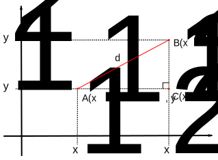
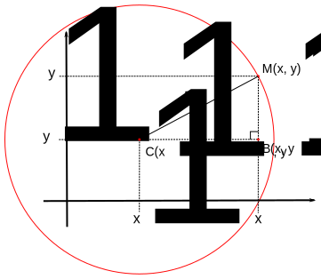

En esta página se incluyen las demostraciones de algunas de las fórmulas matemáticas elementales de la lección Fórmulas matemáticas.
En la ecuación de primer grado:
`a x + b = 0`
A partir de la ecuación de segundo grado: `a x^2 + b x + c = 0`
Dividiendo entre `a` obtenemos la expresión (1): `x^2 + b / a x + c /a = 0`
Teniendo en cuenta que: `(x + b / (2a))^2 = x^2 + b / a x + b^2 /(4a)`
Pasando el último término al lado izquierdo obtenemos la expresión (2): `x^2 + b / a x = (x + b / (2a))^2 - b^2 /(4a^2)`
Sustituyendo la expresión (2) en la expresión (1): `(x + b / (2a))^2 - b^2 /(4a^2) + c /a = 0`
Por tanto: `(x + b / (2a))^2 = b^2 /(4a^2) - c /a`
Es decir: `(x + b / (2a))^2 = b^2 /(4a^2) - (4ac) /(4a^2)`
Es decir: `(x + b / (2a))^2 = (b^2 - 4ac) /(4a^2)`
La solución depende entonces del signo de `(b^2 - 4ac) /(4 a^2)`, que es el mismo que el signo de `b^2 - 4ac` ya que `4 a^2` es siempre positivo:
Haciendo raíz cuadrada a ambos lados: `x + b / (2a) = 0`
Despejando `x` encontramos la solución: `x_1 = (-b) / (2a)`
Haciendo raíz cuadrada a ambos lados: `x + b / (2a) = +-sqrt((b^2 - 4ac) /(4a^2))`
Es decir: `x + b / (2a) = +-sqrt(b^2 - 4ac) / sqrt(4a^2)`
Es decir: `x + b / (2a) = +-sqrt(b^2 - 4ac) / (2a)`
Despejando: `x = -b/(2a) +-sqrt(b^2 - 4ac) / (2a)`
Es decir: `x = (-b +-sqrt(b^2 - 4ac)) / (2a)`
La ecuación tiene entonces dos soluciones: `x_1 = (-b + sqrt(b^2-4ac)) / (2a)`, `x_2 = (-b - sqrt(b^2-4ac)) / (2a)`
En una sucesión aritmética la diferencia entre dos términos es constante, es decir, `U_(n+1) - U_n = d`
Por tanto, `U_1 - U_0 = d`, es decir, `U_1 = U_0 + d`.
Y por tanto, `U_2 = U_1 + d = (U_0 + d) + d = U_0 + 2 d`
De la misma manera, `U_3 = U_2 + d = (U_0 + 2 d) + d = U_0 + 3 d`
De la misma manera, `U_4 = U_3 + d = (U_0 + 3 d) + d = U_0 + 4 d`
En general, podemos escribir la fórmula buscada:
`U_n = U_0 + n * d`

Como se ve en el dibujo anterior, el triángulo ACB es rectángulo en C. El teorema de Pitágoras para este triángulo nos relaciona la distancia `d` entre los puntos `A(x_1, y_1)` y `B(x_2, y_2)` con sus coordenadas:
`d^2 = (x_2 - x_1)^2 + (y_2 - y_1)^2`
Haciendo raíces cuadradas en ambos lados de la ecuación, obtenemos la fórmula buscada:
`d = sqrt((x_2 - x_1)^2 + (y_2 - y_1)^2)`
Una circunferencia es el conjunto de puntos que se encuentra a una distancia fija de un punto (el centro de la circunferencia).

Como se ve en el dibujo anterior, el triángulo CBM es rectángulo en B. El teorema de Pitágoras para este triángulo es la ecuación de la circunferencia de centro `C(x_1, y_1)` y radio `R`:
`(x - x_1)^2 + (y - y_1)^2 = R^2`
que también se puede escribir expresando `y` en función de `x` como:
`y = y_1 +- sqrt(R^2 - (x - x_1)^2)`
... teniendo en cuenta que `x` toma valores entre `x_1 - R` y `x_1 + R`, es decir:
`x_1 - R ≤ x ≤ x_1 + R`
Nota: El ± de la fórmula anterior significa que para cada valor de x hay dos posibles valores de y, que se calculan sumando o restando la raíz cuadrada.